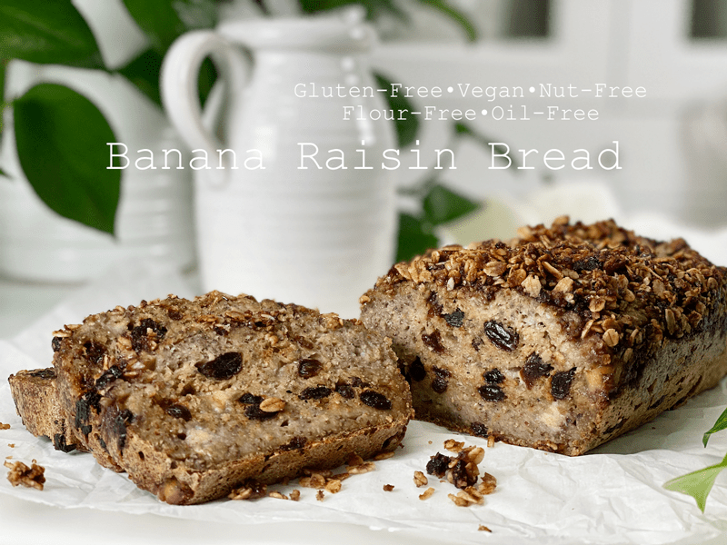
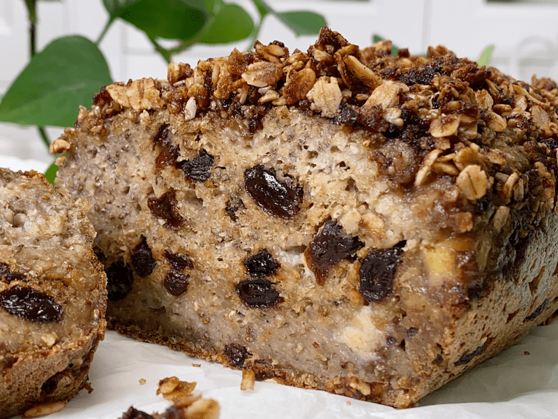
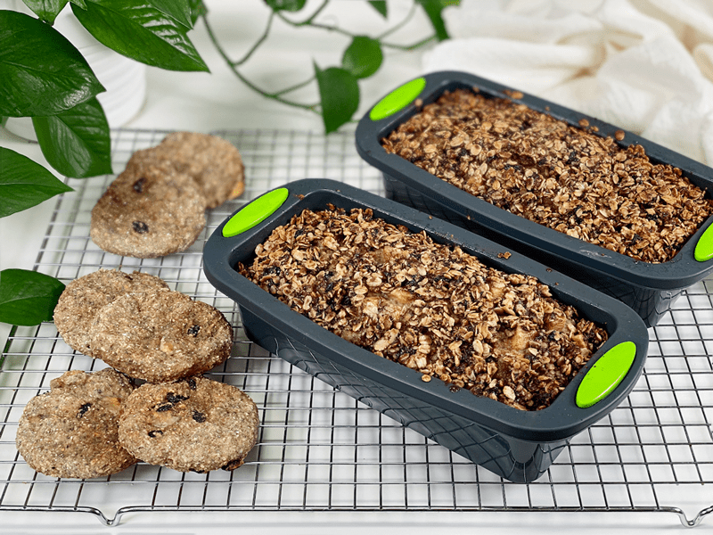
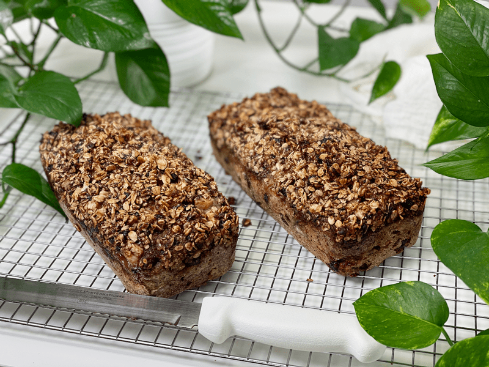
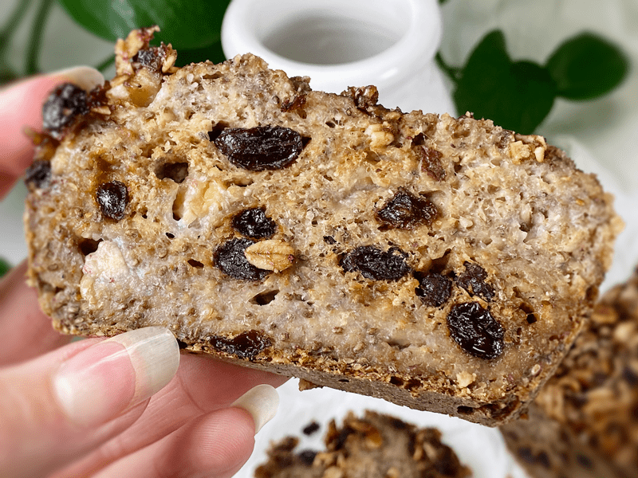
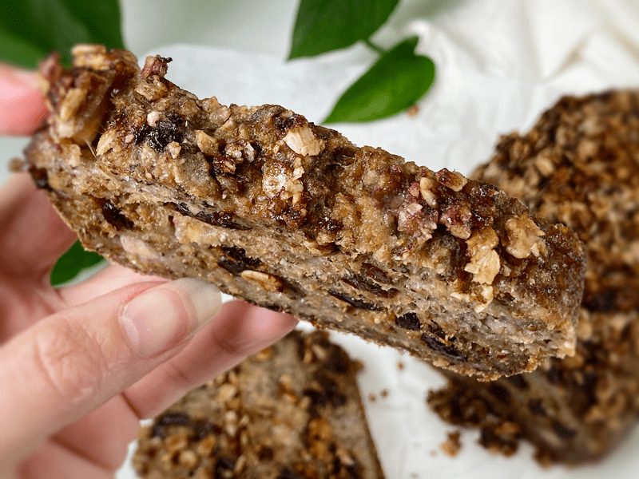
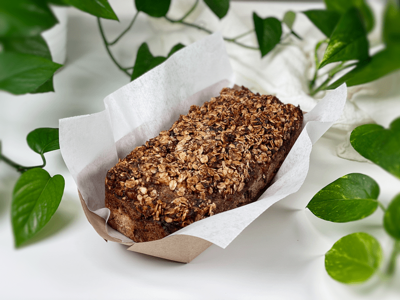
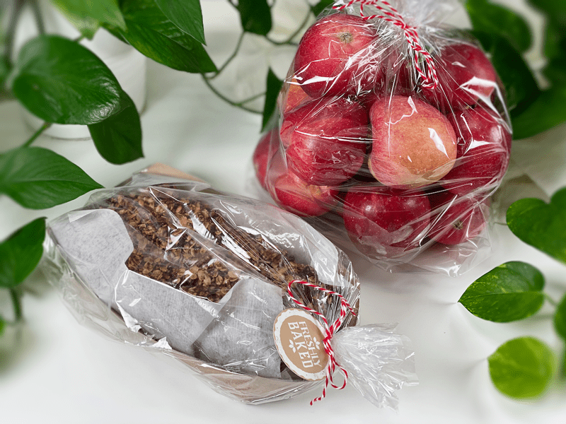

Banana Raisin Bread with Crumble Topping | Cooked | Oil-Free | Flour-Free | Nut-Free
The moment this bread started baking in the oven, I immediately wanted to jump back into my jammies, glide my tippytoes into my favorite fuzzy slippers, and shake my brushed hair back into a frightful bedhead. How can just the smell of bread baking evoke such thoughts and feelings? That’s some powerful magic right there. This bread makes me and our home feel cozy, which is perfect for this chilly fall season.

Cozy Foods = Thermogenesis and Body Heat
Did you know that there is some science behind the fact that foods can evoke the feeling of coziness? In general, foods that take longer to digest can help raise your body temperature and make you feel warmer. The medical term for this process is thermogenesis, which is the process of your body producing heat caused by food metabolizing. So for instance, oats and buckwheat, which are the foundation of this bread, are a great source of fiber and plant protein. Fiber, which takes longer to digest, makes you feel full and the feeling full brings comfort and coziness…unless you eat too much and then suffer from a sour stomach.
Not only that, the aroma of foods and the visual presentation of them can evoke such feelings, especially if they are grounded in loving memories. I encourage you to really slow down and enjoy the foods you eat. Savor not only their flavor but the nutrition that gets absorbed into your body.
Anyway, back to the recipe… I originally designed this recipe for our doctor and his wife. They are amazing pillars in our community and always go above and beyond to support the well-being of those they come in contact with. Due to COVID, I find it more challenging to do acts of love for others, due to social distancing. So, the only thing I could think of at this moment was to bake them something special (that catered to their dietary needs) along with a bag of freshly picked apples from our property. It’s easy to focus on all the negativity that surrounds us in this world, so I encourage you to find ways to express your love and appreciation to those around you. We could all use a bit more of that! Now, let’s pop into the logistics of this recipe.
Texture
This bread is very moist, almost teetering on a cake-like texture due to the fresh ripe bananas. Alternatively, you can use dried bananas, which will create a more bread-like texture. The shelf-life will be altered based on whether you use fresh or dried bananas — dried will give you the longest expiration date.
- If you want a more cake-like bread, use fresh organic banana.
- If you want a more bread-like bread, use soft, dried organic banana pieces.

Tips and Techniques
- I have this bread titled as being oil-free, which is true unless you add the jam crumble on top, which contains 2 Tbsp of coconut oil. If you are omitting oils from your diet, skip the crumble topping.
- Psyllium husks – the recipe calls for 1/4 cup psyllium husks (not powder), but if you only have the powder you can use it–add only 2 Tbsp to the recipe. I prefer the texture that the husks provide, but I have used the powder form in a pinch.
- I talk about using fresh or dried bananas, but I will say that enjoy the fresh form better, because the flavor seems more dispersed. The key is to make sure they are ripe so we don’t have to add any more sweetener.
- The bread batter can also be transformed into donuts, muffins, and “cookies.” If you wish to make cookies from it, you will need to hand-flatten the dough once placed on a baking sheet, as it won’t flatten on its own (see photo below).
I truly hope that you are enjoying this fall season. May your days be filled with love and blessings, amie sue
 Ingredients
Ingredients
Yields 1 (3 3/4″ x 8 3/4″) pan – roughly 14 slices
- 1 cup raw whole buckwheat kernels, soaked
- 1 1/2 cups gluten-free rolled oats, not soaked
- 1/4 cup chia seeds
- 1/4 cup psyllium husks (not powder)
- 1/4 cup unsweetened applesauce
- 1 1/2 cups water
- 2 Tbsp maple syrup
- 2 tsp apple cider vinegar
- 1 tsp sea salt
- 1/2 tsp baking soda
- 1 large RIPE diced banana
- 1 cup raisins
Jam Crumble Topping (optional)
- 1/4 cup gluten-free rolled oats
- 2 Tbsp brown coconut sugar
- 1/4 tsp ground cinnamon
- 2 Tbsp firm coconut oil
- 2 Tbsp any flavor jam
Preparation
Soaking the Buckwheat
- Place the buckwheat in a glass or stainless steel bowl, and cover with double the amount of water.
- Add 2 Tbsp raw apple cider vinegar, stir, and cover with a clean dishtowel.
- Let it sit on the counter for 30 minutes to 4 hours.
- Once ready to use, drain and rinse before adding to the food processor.
Jam Crumble (optional)
- Combine the chopped oats, sugar, and cinnamon together.
- Using a fork, mix in the firm coconut oil until crumbles form.
- Fold in the jam and set aside.
Mixing and Baking
- Preheat oven to 350 degrees (F) and prepare your baking pan.
- I am baking the bread in silicone pans; therefore I don’t need any oil or parchment paper. One tip when using silicone baking dishes is to place them on a baking sheet before loading and transporting them to the oven. Since they are soft and flexible, they can be challenging to handle once full.
- If you use any other type of pan, I recommend lining with parchment paper so the bread doesn’t stick.
- Add the rolled oats, chia seeds, psyllium husks (not powder), baking soda, applesauce, water, maple syrup, apple cider vinegar, and salt to the food processor (along with the buckwheat). Process for a full 30-60 seconds.
- Add raisins and process enough to break down just a little.
- Hand mix in the 80% of the diced banana along with the dried or fresh banana, and immediately pour it into the pan.
- If using dried bananas, it is best to place them in a bowl, covered with hot water, letting them stand 10 minutes, or until soft, drain and mix in your bread as usual.
- Sprinkle the extra diced banana on top, gently pushing it in.
- Spread the crumble topping over the top surface of the bread, lightly pressing some of it in, and bake for 1 hour.
- Remove from the oven and carefully remove the bread from the pan, placing it directly onto the baking sheet. Bake for another 10 minutes.
- Once done baking, move the bread onto a cooling rack.
- Cut once cooled, and enjoy!
Storage
- Once cooled, you can store it in an airtight container in the fridge for around 5 days, BUT it is best if enjoyed sooner than later for optimal flavor and freshness.
- It also freezes fantastically well and toasts up beautifully. Slice it before freezing and pull out individual pieces as you need for an easy, nourishing breakfast or lunch.
-

-
Hot out of the oven. I made a few “cookies” from the batter as well.
-

-
Once you can handle the pan, it is best to remove them and place on a cooling rack, otherwise, the bottom can get soggy.
-

-
Close-up action! Moist and chewy!
-

-
Top view of the crumble topping. I love the combination of crunchy and moist.
-

-
Getting ready to package up a loaf for a gift.
-

-
Care package for our doctor and his family. Homemade bread and just-picked apples from our orchard.
© AmieSue.com